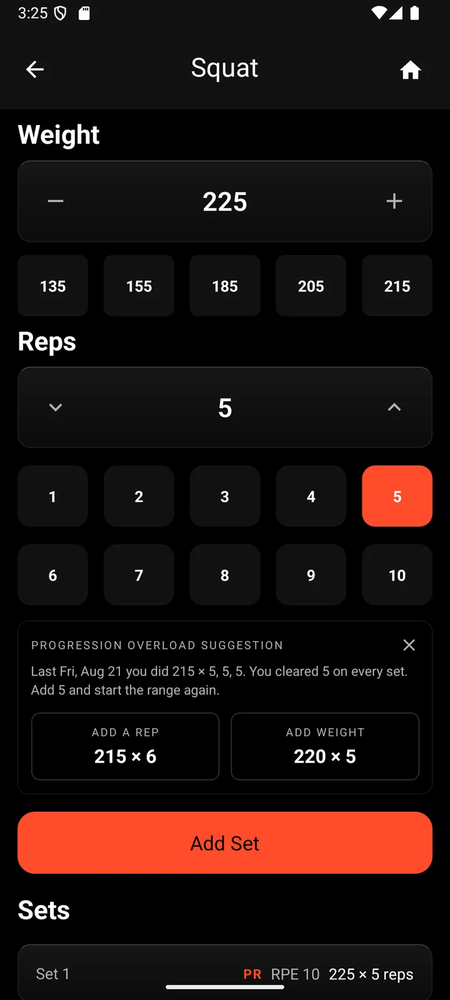
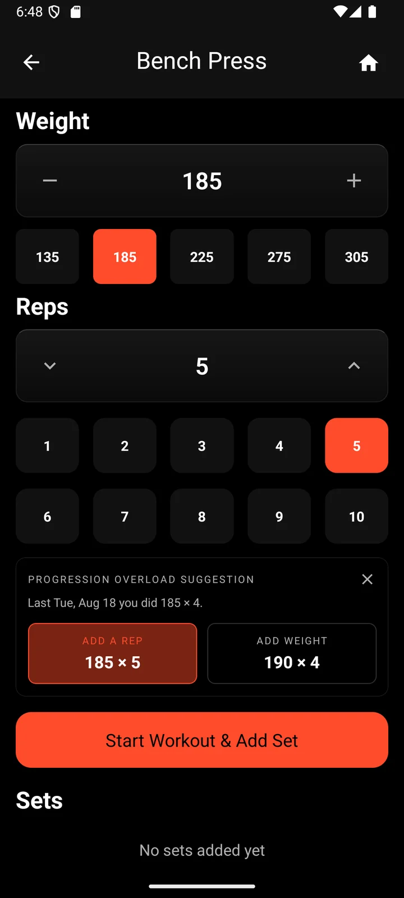
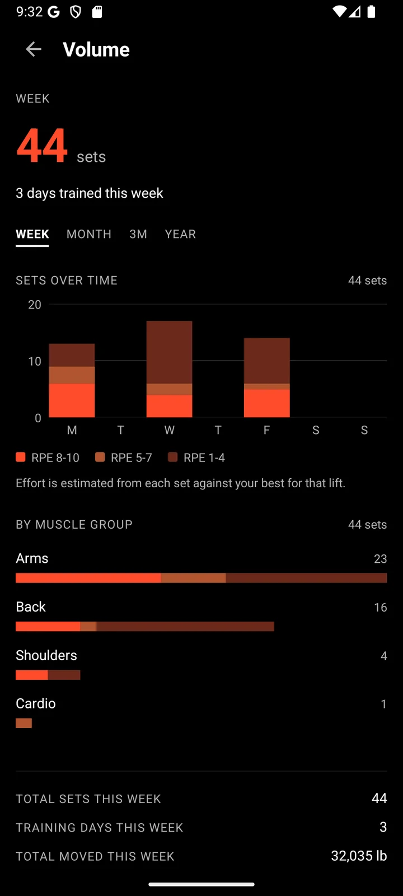
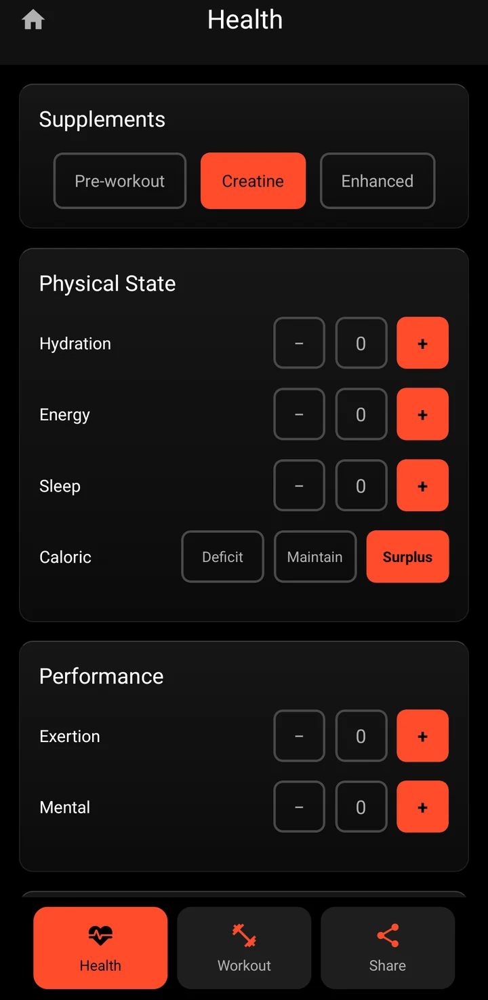
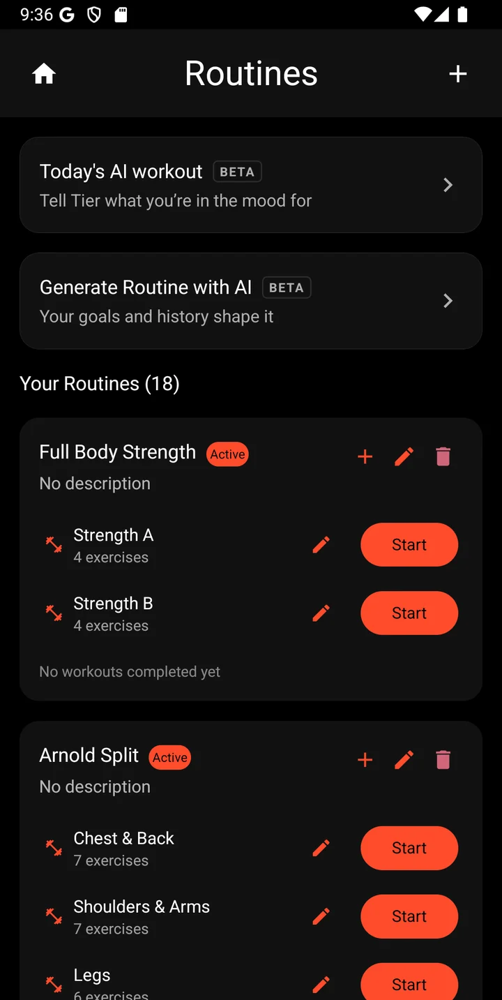

A set logged before you catch your breath.
Tier was built because every other logger was slow. It’s made for the twenty seconds between sets: one hand, chalk on it, gym lighting.
Get Tier on iPhoneThe weights you use, one tap away
Pick an exercise and Tier offers the weights that make sense for it: plate jumps on a barbell, dumbbell steps on dumbbells, pin steps on machines.
Reps are a row of buttons. Tap, tap, Add Set.

Last week, remembered for you
Open a lift and Tier shows what you did last time and the next step: one more rep, or a little more weight. No scrolling back through history mid-workout.

Every set, rated and tracked
Each set gets an estimated effort, measured against your best from the last 90 days rather than a record from years ago. Your week adds up by day, by effort and by muscle group.
A new personal record is tagged the moment you log it, and counts toward your tier straight away.

Cardio that fits the log
Runs, rides, rows and planks get their own fields: time, distance, heart rate, calories, incline and resistance. A bike ride is no longer logged as reps.
No signal, no problem
Basement gyms have terrible reception. Sets logged offline stay on your phone and upload the moment you reconnect, even if you finished the whole workout underground.
How you felt, next to what you lifted
Log sleep, energy, hydration, supplements and effort with a workout. Once you have enough sessions, Tier compares your lifts on the days you slept well against the days you didn’t.

Routines that save the setup
Save your split once and start any day with a tap. Routines never tell you how to train; they just skip the taps.

Your next set is waiting.
Get Tier on iPhoneFree to start.